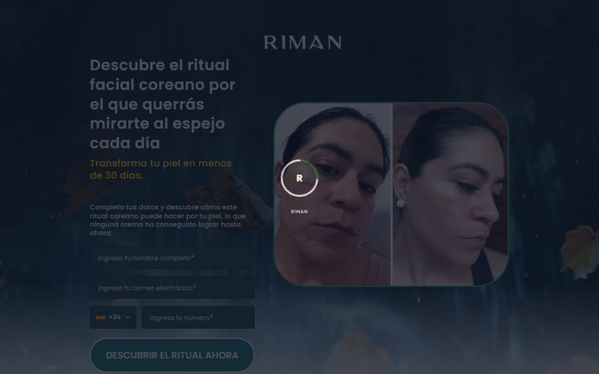
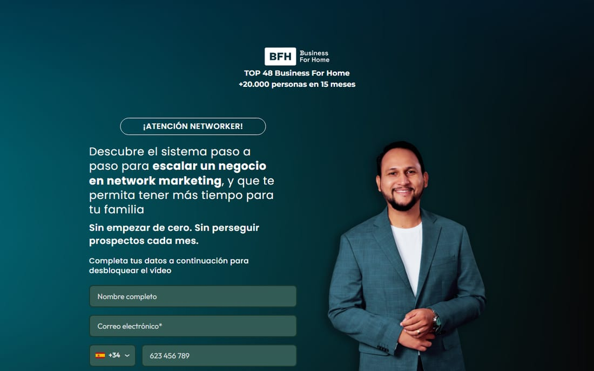
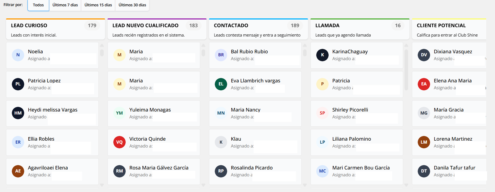
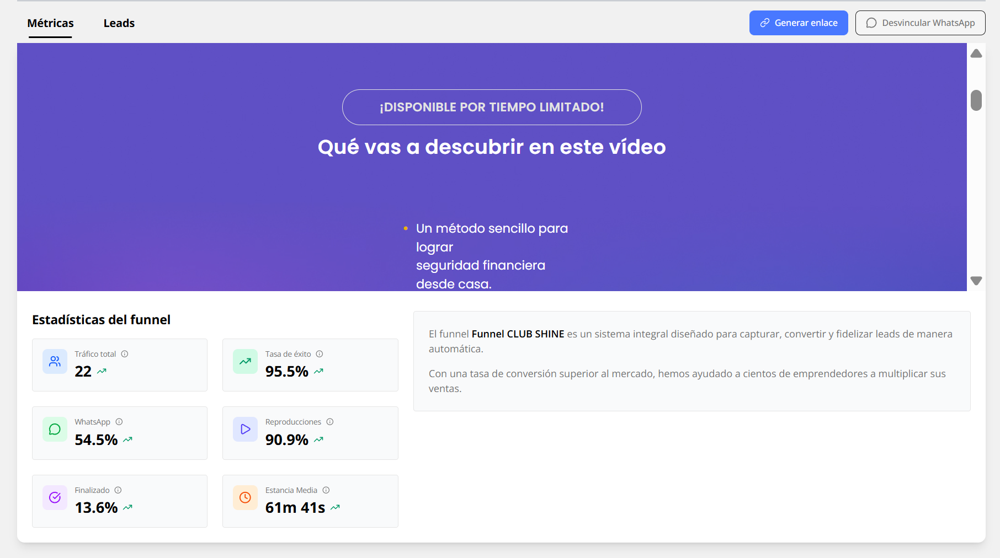
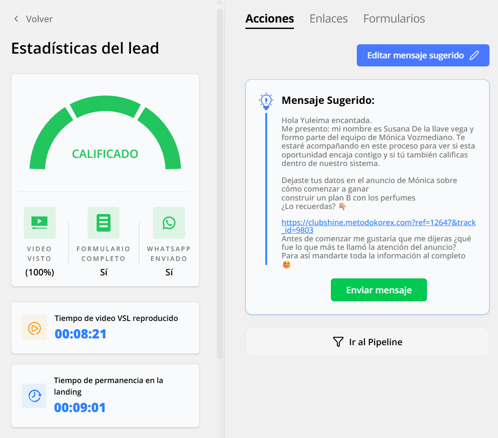
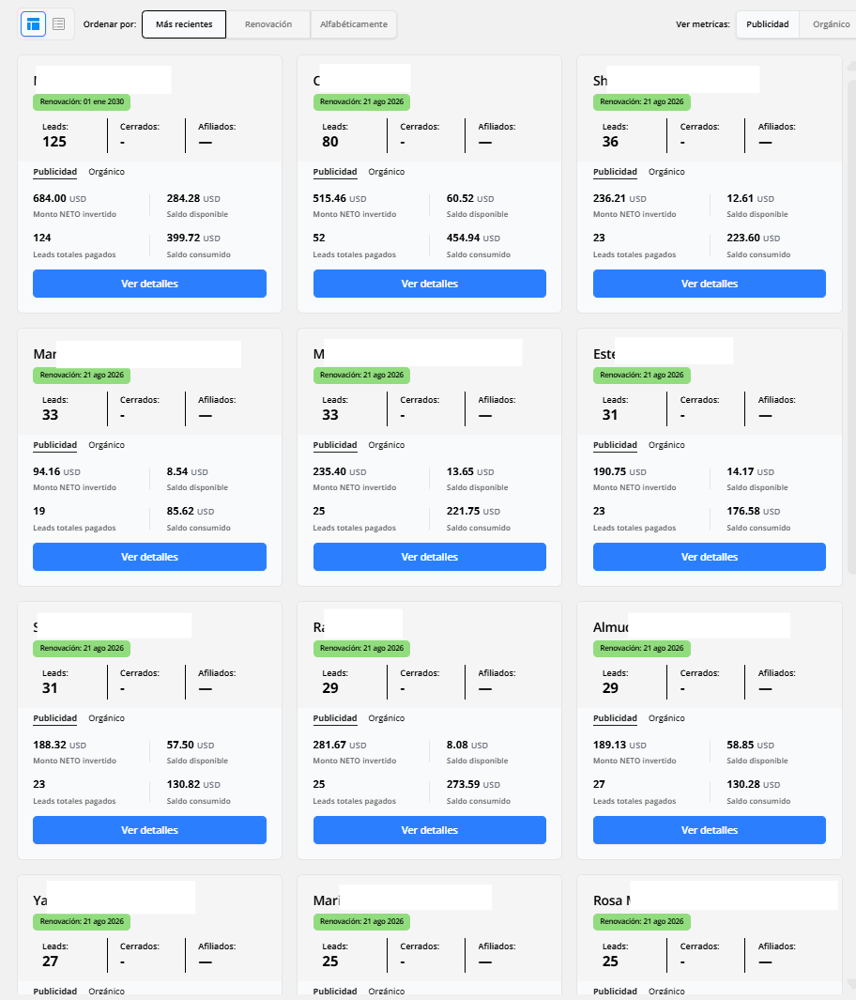
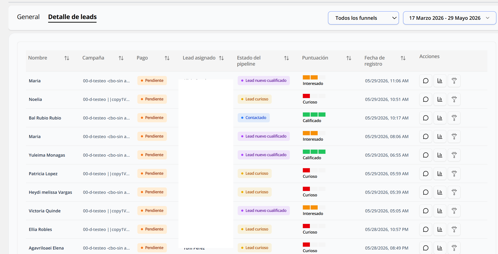
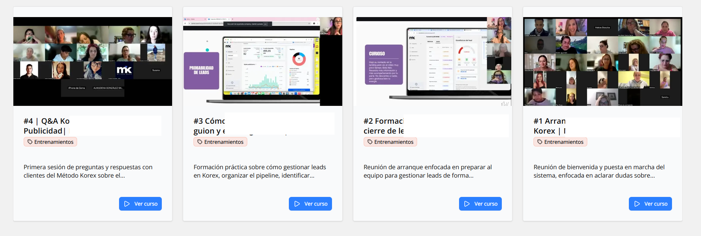
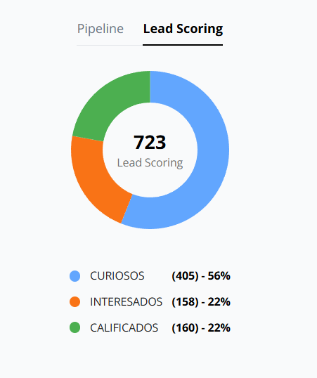
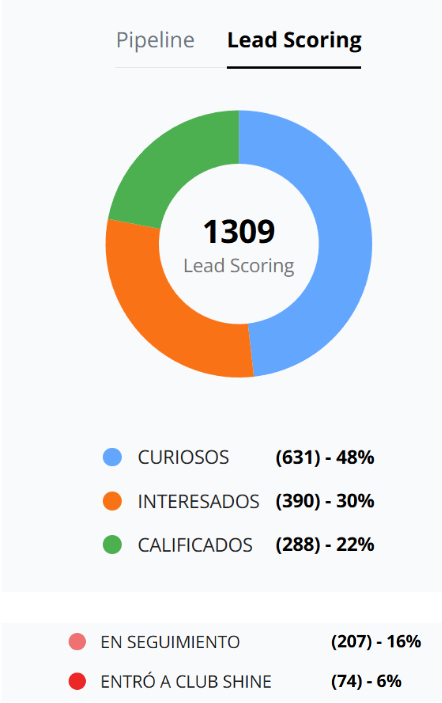

Infraestructura de captación y duplicación para top líderes y empresas de network marketing.
Tu equipo entra después.
ya vieron tu presentación.
Quién está detrás de Korex
Equipo fundador y operativo de 10 personas full-time: estrategia, tecnología, tráfico y soporte.


Referentes que ya confían en Korex.


Entre las redes de nuestros clientes superamos el millón de personas alcanzadas.
Deja de perseguir personas.
Construimos un sistema que presenta tu negocio en video, automáticamente, a personas nuevas cada día. Y las filtra antes de que tu equipo hable con ellas.
Tu equipo solo conversa con quienes YA vieron la presentación, YA entendieron la oportunidad y YA pidieron información.
Funciona igual para ti que para toda tu organización. Totalmente duplicable.
El network marketing sigue funcionando como hace 50 años.
Boca a boca, listas de contactos y Zooms. La promesa es libertad e ingresos residuales. La realidad, para la mayoría, es agotamiento, meses impredecibles y redes que se apagan.
El problema no es la gente. Es el sistema.
Si tu negocio depende de que tú lo expliques cada vez para crecer, no es un negocio. Es un autoempleo disfrazado de liderazgo.
- Redes que mueren en 6 – 12 meses.
- Líderes clave quemados que se fugan a otras compañías.
- Crecimiento que depende del estado de ánimo del líder, no de un sistema.
Agencia tradicional vs Método Korex.
- Mismo manual para dentistas, abogados y MLM.
- Te entrega un Excel con 200 nombres y teléfonos.
- No sabes si vieron tu negocio ni si les interesa.
- Tu equipo llama a ciegas y se quema al tercer "no".
- Vive de captar clientes nuevos cada trimestre.
- Construido desde cero solo para network marketing.
- Te entrega personas que ya vieron tu VSL completa.
- Sabes qué vio cada lead y qué le interesó.
- Tu equipo conversa con prospectos ya calientes.
- Gana cuando tu red crece y se queda — alineado contigo.
Un sistema llave en mano — y una copia para toda tu red.
- Graba los anuncios
- Graba la presentación VSL
- Pone el mensaje central del negocio
- Monta la estructura técnica y crea el embudo
- Capta el tráfico y filtra los prospectos
- Registra y ordena el comportamiento en el CRM
Con el Duplicador Korex tu equipo recibe el servicio llave en mano ya montado. No necesita:
- Grabarse
- Aprender Meta Ads
- Crear funnels ni gestionar herramientas complejas
Su único trabajo: responder, guiar y cerrar a los contactos que le llegan ya filtrados.
Los 3 pilares del Método Korex.
Vamos a poner a funcionar un sistema que te trae potenciales clientes todos los días tanto de producto como de negocio, a través de publicidad en Facebook e Instagram
Aquí nos diferenciamos de cualquier agencia. Nuestra tecnología califica cada lead por su nivel de intención — curioso, interesado o cualificado — según cómo interactúa con el video y la página.
Instalamos nuestro algoritmo propietario de distribución de leads. Cuando entra un prospecto, el sistema lo asigna al networker que corresponde y le entrega un mensaje pre-armado por IA para que la red no improvise.
Qué incluye el setup.
- Estrategia integral de captación
- Creación, gestión y optimización de campañas
- Investigación de competencia y nicho
- Definición de avatar y ángulo de comunicación
- Mejora continua del coste por lead
- Diseño completo del embudo
- Landing personalizada de alta conversión
- Redacción estratégica del mensaje
- Producción del VSL (guion, grabación, edición)
- Integración de formulario y seguimiento
- Optimización continua de conversión
- Accesos al CRM Korex Duplicador
- Segmentación automática por intención
- Sistema propietario de reparto de leads
- Panel de métricas en tiempo real
- Mensajes pre-armados + IA de respuestas
- Páginas replicables para tu equipo
- Sesiones grupales semanales en la activación
- Ajustes sobre campañas, embudo y VSL
- Soporte por chat durante los 90 días
- Módulos de mentalidad y expectativas
- Asesoría para entrenar a tu red
- Implementación 24–48 h tras la firma
Los 4 pasos del Método Korex.
Publicamos anuncios para atraer prospectos.
Creamos el copy persuasivo de los anuncios y nos encargamos también de su edición. Estos son algunos ejemplos reales que hemos lanzado.
Captamos sus datos mediante un embudo de ventas.
Cada negocio tiene su propio embudo optimizado. Algunos ejemplos lanzados:




También lanzados: Janeyling · José L. Rodríguez · entre otros. Si querés, abrimos uno o dos embudos en vivo durante la llamada.
Los prospectos ven tu presentación VSL.
La pieza central del sistema: un video donde explicas tu negocio una sola vez y se reproduce miles de veces sin que tengas que estar presente.
Explicas tu negocio una sola vez. El sistema lo repite por ti, a escala, todos los días.
Korex Duplicador — el CRM inteligente.
Código propio, construido desde cero solo para multinivel. Tú y tu equipo tendrán visibilidad total sobre métricas, prospectos y desempeño — desde cualquier dispositivo.


Todo lo que ve y gestiona tu equipo.




Hacemos todo por ti en menos de 30 días.
Qué puedes esperar del sistema.


+ 26 clientes activos en la base operativa · Daniel Serrano · Jonathan Díaz · Elixon Alcalá · José Luis Rodríguez · Corina Grosu · José Luis Rivas.
Testimonios dentro de Korex


Toca cualquier captura para ampliarla.
Garantía Korex por contrato.
Hasta llegar a esos KPI, no cobramos mantenimiento. Korex sigue optimizando copy, VSL y segmentación sin coste adicional hasta cumplirlos.
- Rendimiento del embudo (CPL, CTR, visualización del VSL).
- Que las personas correctas vean tu presentación.
- Que los leads lleguen filtrados a tu equipo.
- Cantidad de cierres ni facturación final.
- Velocidad de respuesta de tu equipo a leads.
- Calidad de tu oferta o contexto de mercado.
- Resultados si no cumples tus 4 condiciones.
- Grabar tus contenidos en máximo 10 días desde recibir los guiones.
- Mantener inversión publicitaria mínima de 1.000 USD en los primeros 90 días.
- Responder leads cualificados en menos de 1 hora en horario laboral.
- Facilitar accesos a cuentas, plataformas y dominios necesarios.
- No alterar copies, landing, VSL ni anuncios sin aprobación durante la validación.
¿Es esto para ti?
- Tienes 4–10 directos comprometidos hoy.
- Vas a responder leads cualificados en menos de 1 hora.
- Tu equipo tiene cultura de invertir en su negocio.
- Prefieres un sistema antes que depender de tu energía diaria.
- Estás dispuesto a invertir en publicidad para acelerar.
- Buscas probar suerte sin compromiso de ejecución.
- No vas a responder leads ni hacer seguimiento.
- Tu equipo viene pelado y sin cultura de invertir.
- Esperas que el sistema sustituya tu liderazgo.
- No tienes núcleo movilizable hoy (menos de 4 directos).
Lo que costaría montar esto por separado.
Mira lo que vale realmente esta infraestructura en el mercado.
Coste estimado de construcción inicial: 20.000 – 45.000 USD. Son tarifas verificables de freelancers MLM, agencias hispanas y desarrollo interno.
Ganamos cuando tú duplicas.
Nuestro negocio real es tu éxito futuro como Partner. Por eso, en lugar de invertir más de 20.000 USD montando este equipo por tu cuenta, tu acceso a la infraestructura es:
Activación Networker 350 USD pago único + 25% pauta
3 caminos para cubrirlo.
Tu meta no es pagar el mantenimiento de tu bolsillo — es que el sistema lo pague por ti.
Camino futuro — de activación a Korex Partner.
Pasas de ser el cuello de botella de tu organización a cobrar mientras el sistema duplica por ti.
¿Arrancamos?
Confirma la propuesta, realiza el pago y reserva tu slot. En las 24 horas siguientes el equipo de Korex se pone en contacto contigo para coordinar el onboarding y el inicio del proyecto.
Routing ABA: 091311229
Cuenta: 202599475401 (Checking)
SWIFT / BIC: CHFGUS44021
Cuenta: 202599475401